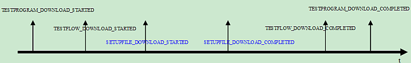

DownloadTestprogram
This remote control command tries to download the desired test program into the tester. Downloading the test program involves downloading the test flow, the setup files and other components of the test program. During the downloading procedures, the status is notified via asynchronous event. The following picture shows the sequence of the event coming up when downloading a test program.

The SETUPFILE_DOWNLOAD_STARTED and
SETUPFILE_DOWNLOAD_COMPLETED will occur several times because the downloading
of each setup file will make these two events notified.
SUCCESS will be returned if the command is successfully issued. Otherwise, an error object indicating the error code, description and severity will be returned.
Code |
Description |
Severity |
|---|---|---|
PARAMETER_EXCEPTION |
|
RECOVERABLE |
FILE_NOT_FOUND |
|
RECOVERABLE |
ILLEGAL_OPERATION |
|
RECOVERABLE |
UNSPECIFIED |
|
RECOVERABLE |
Dependency
A device is already set for SmarTest.
I/O |
Parameter |
Description |
|---|---|---|
I |
SESSION_ID |
The ID of the SmarTest session work with. |
I |
TESTPROGRAM_NAME |
The name of the test program to download. |
Prototype
ParamList cmdParams;
string sessionId;
Status command("DownloadTestprogram", cmdParams, sessionId);Functional changes
- Introduced before SmarTest 6.3.2
- SmarTest 6.5.2: Empty input of TESTPROGRAM_NAME is supported.